Landmarks Commission
Meeting Summaries
2026-01-12: Seven consent agenda items were approved including additions in the Marquette Bungalows and Third Lake Ridge Historic Districts. A standing seam metal roof request at 1123 Jenifer Street was denied for not meeting historic district standards. The Commission gave significant findings for properties on W. Gilman Street slated for demolition: 411 W. Gilman (first Rocky Rococo location) received a “B” finding, while 415 W. Gilman (Brutalist “Master Hall”) and 433 W. Gilman (Prairie-style commercial) both received “A” findings with recommendations for documentation.
2025-12-08: A brief meeting with one demolition permit approved for 5602 Portage Road, finding no historic value. The Secretary’s Report addressed public comment questioning why TOD Overlay district changes weren’t referred to Landmarks Commission.
2025-11-10: The Commission approved several consent agenda items and discussed a development adjacent to the Grimm Book Bindery landmark at 425 N. Frances Street, recommending approval with a less industrial garage door design. The 450 W. Gilman Street demolition (an 1890 University Hotel building) sparked debate, ultimately receiving a “B” finding acknowledging historic value to Madison’s vernacular context.
2025-10-06: Eleven demolition items were approved on the consent agenda. The Commission approved landmark plaque wording for the Benjamin and Amy Butts house at 633 E. Johnson Street. Notable discussions included 221 S. Baldwin Street (approved for demolition despite Walking Tour inclusion due to deteriorated integrity) and 801 S. Whitney Way well building, which received a “B” finding with a documentation recommendation.
2025-09-15: Three demolition permits passed on consent. The Klose Cottage garage demolition at 748 Jenifer Street was approved with conditions after discussion of neighborhood concerns. An informational presentation introduced the 16-story student housing development planned adjacent to the Grimm Book Bindery. The Commission also approved text for the city’s new historic markers program.
2025-08-18: Katherine Kaliszewski and Richard Arnesen were re-elected as Chair and Vice Chair. The 124 E. Gorham Street new construction in the Mansion Hill Historic District was approved on its third presentation. The former Capitol Times building at 302 E. Washington Avenue received a “B” finding acknowledging its historic association with the newspaper from 1928-1949.
2025-08-04: A brief 25-minute meeting featuring approval of a contemporary addition to the Sauthoff House at 740 Jenifer Street, an 1857 designated landmark. Commissioners praised how the proposed modern addition complements the historic building’s blocky style while remaining clearly contemporary.
2025-07-21: A short meeting highlighted by a presentation from the Madison Trust for Historic Preservation on their new grant program, offering $10,000 annually for preservation projects. Seven demolition permits for the East Washington Avenue redevelopment area were approved with findings of no historic value.
2025-06-16: A 13-minute meeting approving three consent agenda items in the Third Lake Ridge and University Heights Historic Districts. The Commission continued discussion on the Historic Preservation Ordinance Amendment, including terminology updates changing “Certificate of Appropriateness” to “Certificate of Approval.”
2025-06-02: The Commission provided an advisory recommendation supporting the 501 E. Washington Avenue development adjacent to the Mattermore-Malaney House landmark. Section 106 reviews for the North-South Bus Rapid Transit project and Kennedy Road charging station found no adverse effects on historic properties. The former St. Patrick’s School at 630 E. Washington Avenue was approved for demolition.
2025-05-05: The annual special in-person meeting included commission orientation, SOI Standards review, and a five-year check-in on the Madison Historic Preservation Plan. Staff reported that federal policy changes had halted a previously awarded grant for documenting 1960s-1980s architecture.
2025-03-10: The Benjamin and Amy Butts house at 633 E. Johnson Street was unanimously approved for landmark nomination, recognizing the family’s role in establishing early African American institutions in Madison. St. Bernard’s Catholic Church crypt addition was approved. An informational presentation on 124 E. Gorham Street drew concerns about massing and compatibility with the Mansion Hill Historic District.
2025-02-10: Extensive discussion on amending the Lamp House Block Ad Hoc Plan Committee report regarding building height restrictions resulted in placing the item on file without prejudice. The Commission reviewed proposed changes to the demolition approval process and supported the Mackenzie House National Register nomination for its distinctive architecture and archaeological site.
Meeting Details
January 12, 2026
By Diane Zenz
All members were in attendance, and last month’s meeting minutes were approved. There were no public comments.
Disclosures and Recusals
Morrison recused himself from items 5 and 6 as the applicant is his employer.
Consent Agenda
The following 7 items were placed on the consent agenda to be voted on as a group. Motion made by Alder Duncan and seconded by Harris to approve. Motion passed unanimously.
- Item #2: Request for Certificate of Approval at 1520 Rutledge Street – Addition in the Marquette Bungalows Historic District (District 6) Legistar 91229.
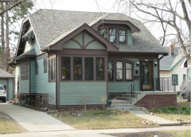
- Item #3: Request for Certificate of Approval at 1132 Spaight Street – Addition in the Third Lake Ridge Historic District (District 6) Legistar 91328.
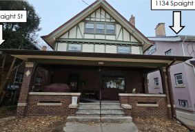
- Item #5: Demolition Historic Value Review at 2926 Atwood Avenue – Consideration of a demolition permit to demolish a commercial building (District 15) Legistar 91243.
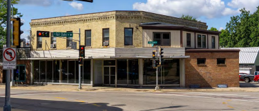
- Item #6: Demolition Historic Value Review at 232 South Fair Oaks Avenue – Consideration of a demolition permit to demolish a commercial building (District 15) Legistar 91244.
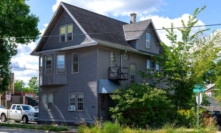
Item #9: Demolition Historic Value Review at 421 West Gilman Street – Consideration of a demolition permit to demolish a commercial building (District 2) Legistar 91235.
Item #11: Demolition Historic Value Review at 4426 East Buckeye Road – Consideration of a demolition permit to demolish a commercial building (District 16) Legistar 91237.
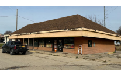
- Item #12: Demolition Historic Value Review at 999 South Park Street – Consideration of a demolition permit to demolish a commercial building (District 13) Legistar 91238.
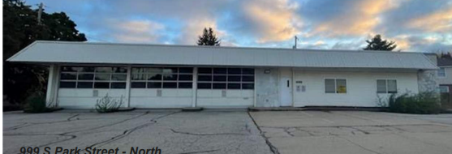
1123 Jenifer Street — Request for Certificate of Approval
Legistar 91099. Request for Certificate of Approval for exterior alteration in the Third Lake Ridge Historic District – Roof Replacement (District 6).
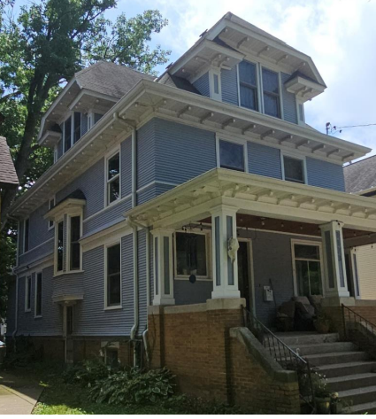
The proposed project is to replace the existing asphalt shingle roof on the house and garage with a standing seam metal roof. The home is a two-unit residential building constructed in 1910 in the American Foursquare form with Victorian architectural elements. The applicant believes the standing seam metal roof has five comparables in the area. Staff disagreed for the following reasons:
- 517 S. Baldwin and 1037 Williamson: The work was done under the previous ordinance and would not meet the current ordinance standards.
- 1012 Williamson: This is a commercial building with a historic Trachte barrel roof not used in residential buildings.
- 430 S. Thornton: This is a commercial structure outside of the Third Lake Ridge local historic district.
- 826 Williamson: The roof on this new mixed-use building is flat and, according to the new construction standards, can have any style of roofing.
Staff believe the standards for granting a Certificate of Approval are not met and recommended the Landmarks Commission deny the project. Staff suggested a metal roof that looks like shingles.
The applicant, William Gustafson, spoke in support of the project. He believes there are comparable roofs in the area and that the metal roof is better for the environment and fireproof. He also stated that a metal roof that looks like shingles is cost prohibitive.
Arnesen stated he didn’t see how they could approve a metal roof on a Victorian structure when it doesn’t meet the Standards. Harris was in agreement. Taylor was more sympathetic, stating “it’s your home, man.”
Alder Duncan made a motion, seconded by Morrison, to deny the request for the Certificate of Approval because the standards are not met. The motion passed by the following vote:
Ayes: 5 — Duncan, Morrison, Harris, Ely-Ledesma, Arnesen
Noes: 1 — Taylor
Non-voting: 1 — Kaliszewski
Demolition Historic Value Review — West Gilman Street
The following items are part of a larger demolition to make way for new construction at 411-433 West Gilman Street.
411 West Gilman Street — Demolition Review
Legistar 91233. Demolition Historic Value Review regarding consideration of a demolition permit to demolish a commercial building (District 2).
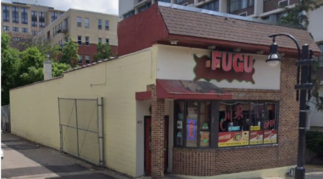
This single-story building of approximately 2,175 square feet was constructed in 1949, with an addition added in 1965. The building is occupied by a restaurant (Fugu). Staff recommended a finding of (B) for historic value related to it being the first location for the Rocky Rococo pizza company, but that the building itself is not architecturally or historically significant. Staff also noted there are many other Rocky Rococo locations where that history could be told.
Morrison, Kaliszewski, Alder Duncan, and Arnesen discussed the value of Rocky Rococo as a Madison/State Street institution but didn’t know if it rose to the level of a (B) finding. Morrison pointed out that they didn’t call out other local restaurants like Portabella. Arnesen argued that Rocky’s and its association with State Street and UW-Madison had a stronger feel than the impact of other local restaurants like Milio’s or Portabella. Harris agreed with the significance of Rocky’s versus other local restaurants mentioned and added that there will be some subjectivity in determining which historic value criterion a building falls under. Arnesen stated he would put it under “cultural practices” in criterion (B).
Motion made by Arnesen, seconded by Morrison, with a recommendation of finding (B) for historic value related to being the first location for Rocky Rococo pizza company, but that the building itself is not architecturally or historically significant. The motion passed by voice vote with Duncan voting in opposition.
415 West Gilman Street — Demolition Review (Master Hall)
Legistar 91234. Demolition Historic Value Review regarding consideration of a demolition permit to demolish a commercial building (District 2).
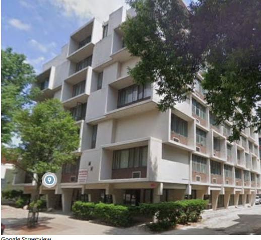
Bailey provided information and history on the building, including that it was built in 1966 as a private dorm and later became apartments marketed to students. The building is in the Brutalist style. She stated this one is unusual in that it falls into Brutalist Expressionism with its cube approach, and that we don’t have other buildings like this in Madison. Staff recommended a finding of (A) historic value for its significant Brutalist Expressionism architecture.
Kurt Stege spoke about how special this building is, noting two significant aspects: it is a cantilevered residential building (which is rare in Madison) and it appears to be intact. He agreed with a finding of (A).
John Rolling stated the building was obviously very significant and pointed out that we have no Modernist landmarks in Madison yet, but we should. He also supported a finding of (A) and stated if the Plan Commission approves the demolition, he recommends documentation of the building through photographs and measured drawings be required.
Morrison, Harris, and Arnesen commented on the building’s interesting and unique architectural features. Both Harris and Arnesen mentioned the significance that the building was a private residential building. Discussion turned to the possibility that the building would be a candidate for National Register listing or as a local landmark.
Motion made by Harris, seconded by Arnesen, to recommend a finding of (A) historic value for its significant Brutalist Expressionism architecture, intact quality, significance related to the social context of Madison, and potential eligibility for listing on the National Register of Historic Places or as a local landmark. If the demolition is approved, the Landmarks Commission recommends that the Plan Commission require documentation of the exterior of the building through photographs and measured drawings. The motion passed by voice vote.
421 West Gilman Street — Demolition Review
Legistar 91235. Demolition Historic Value Review regarding consideration of a demolition permit to demolish a commercial building (District 2).
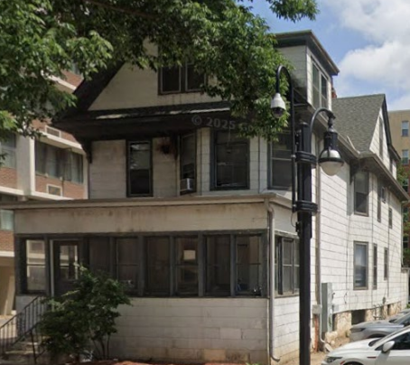
433 West Gilman Street — Demolition Review
Legistar 91236. Demolition Historic Value Review regarding consideration of a demolition permit to demolish a commercial building (District 2).
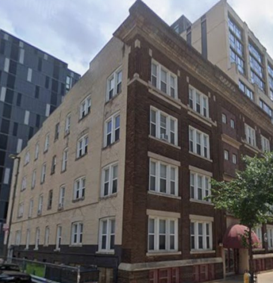
This commercial apartment building was constructed in 1914. The building has 4 stories with a raised basement level exposed above the grade. The 1998 Downtown Preservation Plan and 2012 Downtown Plan identified this building as a potential landmark because of its Prairie-style commercial architecture and rare form of building. The building has lost integrity with the bricked-in windows on the front.
John Myefski presented the redevelopment plan of the proposed project at 411-433 West Gilman Street, specifically as it relates to the recreation of the facade of 433 West Gilman. Myefski stated that because of current zoning codes, once a building is altered, they are not permitted to go over 4 stories. Therefore, they could not keep the existing facade and are required to demolish the building to bring it down to four stories. After demolition and salvaging what they can from the existing building and recreating aspects that are not salvageable, they are proposing to rebuild the facade as a four-story building with a slightly higher first floor and no exposed basement level. Other changes include a change from white windows to black and recasting any stone elements that cannot be reused. The approach for addressing the building’s historic value is to investigate architectural salvage to reinterpret what is there and tie in that history.
John Rolling stated that if the Plan Commission approves the demolition, he recommends they require documentation of the building through photographs and measured drawings of the exterior in addition to the reuse of salvaged materials.
Kaliszewski stated that when mitigating the loss of a structure, it’s not enough to say you will make the new building kind of like what it was before, and that additional mitigation is usually needed. She also wondered what the building would look like if nothing was salvageable, and pointed out that preservationists typically hate facadectomies and asked if there was potential to keep the facade in place and build behind it.
Arnesen agreed with Kaliszewski and stated even though the rendering was fine and the recreation of the building doesn’t look bad, it still doesn’t address the loss of history. Also, if nothing is salvageable, they will be building a new building that looks like an old building. He also had concerns that there were two buildings in the project that were identified as landmarks and/or National Register properties that could be rehabilitated using preservation tax credits.
Morrison agreed with Arnesen and stated the building proposed is not the same as the existing historic building, and it creates a false sense of history.
Kaliszewski brought the subject back to the commission’s job of commenting on whether this is mitigation. She also stated the commission does not have the ability to comment on the proposed architecture because it is not in a local historic district.
Alder Duncan asked why the building had not been landmarked yet if it was identified in 2012 as a potential landmark. Bailey stated the City identifies properties of historic interest, and then it is up to the property owner or members of the public to move forward with the designations. Kaliszewski added that the process takes time, effort, and funding for research and writing. Harris added that this part of the city is often occupied by renters and students who are transient. Arnesen said that often the owner takes this step as the owner wants the tax credits.
After this discussion, Morrison made a motion, seconded by Alder Duncan, to recommend a finding of (A) historic value for its architectural significance and potential eligibility for listing on the National Register of Historic Places or as a local landmark. If the demolition is approved, the Landmarks Commission recommends that the Plan Commission require documentation of the exterior of the building through photographs and measured drawings. The motion passed unanimously.
Secretary’s Report
Heather informed the members that they need to submit their Statement of Interest to the Mayor’s office as soon as possible.
Motion to adjourn by Arnesen, seconded by Morrison. The motion passed unanimously.
December 8, 2025
By Mike Zenz
This month’s meeting was very short. Last month’s minutes were approved, and there was one item approved from the consent agenda:
- Item #2: Consideration of a demolition permit to demolish a single-family residential building at 5602 Portage Road in District 17 Legistar 90765. It was found to have no historic value.
Alder Duncan moved to approve. The motion passed unanimously.
Secretary’s Report
Heather Bailey mentioned that there had been some public comment (by Kurt Stege) in November wondering why the changes to the TOD Overlay districts recently passed by Common Council didn’t come to Landmark’s Commission for comment. She claimed that the changes (including allowing 4-unit buildings in all residential zoning districts by right within the TOD) did not involve any changes to the historical review process and only constituted changes in uses. She also noted that this question came to Landmarks Commission when the TOD Overlay was initially approved to include local and national historic districts. For context, the public comment likely arose from concern by residents of University Hill Farms that the TOD Overlay in that neighborhood would allow 4-unit buildings by right. This was subject of a failed attempt by Alder Tishler to exclude University Hill Farms from those changes.
November 10, 2025
By Diane Zenz
Last month’s minutes were approved.
Public Comment
Kurt Stege spoke regarding the use of “historic preservation” in Sec. 33.19(2)(h), which provides that the Landmarks Commission shall review proposed ordinances affecting historic preservation and make recommendations to Common Council. His concern is with Legistar 90552. He states that on October 28, 2025, the Common Council referred the proposal to both the Housing Policy Committee and Plan Commission for comment and doesn’t believe the proposal has been referred to the Landmarks Commission.
There were no disclosures or recusals.
The following items were moved to the Consent Agenda with a finding of (C) no known historical value:
Item #3: Request for Certificate of Approval regarding exterior alteration of signage in the Third Lake Ridge Historic District for a property located at 308 S. Paterson St. in District 6 Legistar 90440.
Item #4: Demolition Historic Value Review regarding the consideration of a demolition permit to demolish a commercial building located at 501 N. Whitney Way in District 11 Legistar 90454.
Item #5: Demolition Historic Value Review regarding the consideration of a demolition permit to demolish a single-family residential building located at 3009 Stevens St. in District 5 Legistar 90460.
Item #6: Demolition Historic Value Review regarding the consideration of a demolition permit to demolish a commercial building located at 425 N. Frances St. in District 2 Legistar 90465.
Alder Duncan moved to approve with a second by Commissioner Harris. The motion passed unanimously.
308 S. Paterson St. — Request for Certificate of Approval
Legistar 90449. Request for Certificate of Approval regarding exterior alteration in the Third Lake Ridge Historic District (District 6).
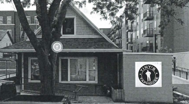
501 N. Whitney Way — Demolition Review
Legistar 90454. Demolition Historic Value Review regarding the consideration of a demolition permit to demolish a commercial building (District 11).
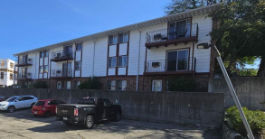
3009 Stevens St. — Demolition Historic Value Review
Legistar 90460. Demolition Historic Value Review regarding the consideration of a demolition permit to demolish a single-family residential building (District 5).
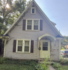
425 N. Frances St. — Demolition Review
Legistar 90465. Demolition Historic Value Review regarding the consideration of a demolition permit to demolish a commercial building (District 2).
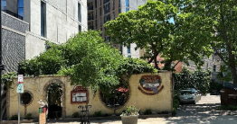
425 N. Frances St. and 450 W. Gilman St. — Advisory Recommendation
Legistar 90011. Advisory Recommendation regarding development adjacent to a designated Madison Landmark (Grimm Book Bindery at 454 W. Gilman St.) (District 2).
This project was brought before the Landmarks Commission on September 15, 2025, where the builder received recommendations on how best to decrease the overall massing of the new 16-story affordable student housing building being constructed next door to the Grimm Book Bindery landmark.
Three people were registered to speak: Brian Munson and Bobby Tait, registering in support and wishing to speak, and Rebecca Anderson, registering in opposition and wishing to speak.
Brian Munson and Bobby Tait, representing the applicant, reviewed the changes since the meeting in September. They highlighted changes regarding the size of the pool so it did not go over the property line, the additional step back to reduce the massing, and the break between the Grimm Book Bindery and the new construction to create separation. They are also willing to work on the garage door, making it look less industrial and more consistent with the rest of the building.
Rebecca Anderson, owner of the Grimm Book Bindery, expressed concern that the new construction would limit natural light into the Bindery and that this would deteriorate the Bindery. She was also concerned about the amount of traffic this development would cause.
Commissioner Ely-Ledesma asked if there were windows on the Bindery that faced the new construction. Brian Munson stated yes and that this is where they pulled the building back to allow for the windows. Commissioners Kaliszewski and Arnesen stated they appreciated the changes and thought it made the project look much better.
A motion was made by Commissioner Arnesen, seconded by Commissioner Harris, to advise the Plan Commission and Urban Design Commission that because of these changes, the project will not be so large as to adversely affect the historic character and integrity of the adjoining landmark; however, they recommend a less industrial look for the garage to maintain the integrity of the adjacent landmark. The motion passed unanimously.
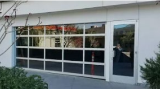
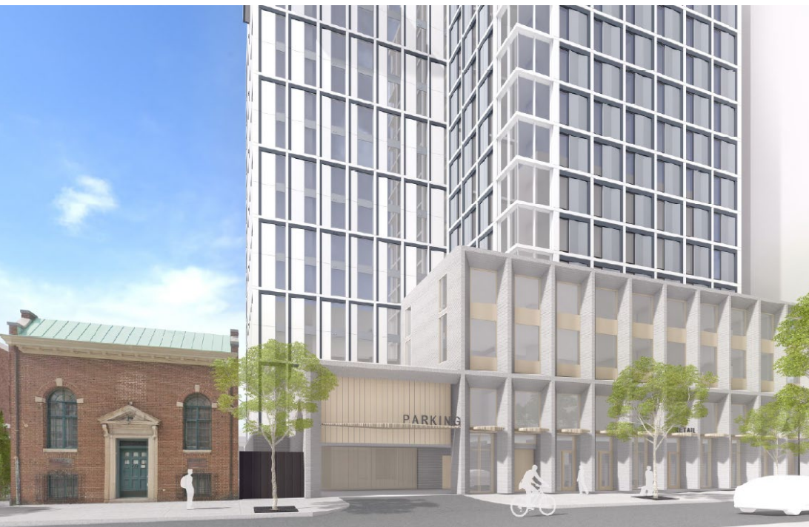
450 W. Gilman St. — Demolition Historic Value Review
Legistar 90470. Demolition Historic Value Review regarding the consideration of a demolition permit to demolish a commercial building (District 2).
The staff report indicates there is no preservation on file; however, the building was built around 1890 as the University Hotel. The architect is unknown, and the building is not architecturally significant. Staff recommended a finding of (C) no known historic value.
Brian Munson is registered in support of demolition.
John Rolling was not present for the meeting but sent an email requesting a designation of (B), stating that the building has historic value related to the vernacular context. In the email, he provided additional information about what was happening in Madison at the time this building was in use as a university hotel. He believes it will be demolished but that it is a regrettable loss and should be remembered through photographs and measurements.
Commissioner Harris agreed that the building is a regrettable loss with historic value related to the vernacular context and one that has maintained its integrity, but there is little information about the building itself.
Alder Duncan said he agreed with staff’s recommendation of (C) no known historic value, while Commissioner Arnesen argued that it is an intact building from 1890, so it’s hard to say it doesn’t have historic value, and was in favor of a (B) finding.
A motion was made by Alder Duncan to recommend a finding of (C) no known historic value. There was no second, and the motion did not move forward.
A motion was made by Commissioner Arnesen and seconded by Commissioner Harris to recommend a finding of (B), as the building has historic value related to the vernacular context of Madison’s built environment as an intact building constructed c. 1890, but the building itself is not historically, architecturally, or culturally significant. The motion does not include Mr. Rolling’s recommendation to document the building.
The motion passed by the following vote:
Ayes: 3 — Commissioners Harris, Ely-Ledesma, and Arnesen
No: 1 — Alder Duncan
Excused: 2 — Commissioners Morrison and Taylor
Non-voting: 1 — Commissioner Kaliszewski

Regular Business — Secretary’s Report
Legistar 86033. Secretary’s Report — 2025.
You can read the Planning Division 2024 Annual Report and view the Landmarks Commission Meeting Schedule for 2026.
The commission will also plan an in-person meeting on May 18, 2026.
Motion to adjourn by Commissioner Arnesen, seconded by Commissioner Harris, and unanimously passed.
October 6, 2025
By Diane Zenz
Last month’s minutes were approved; there were no public comments, disclosures, or recusals.
The following items were approved on the Consent Agenda with a finding of no known historical value:
- Request for Certificate of Approval regarding new construction in the University Heights Historic District for a property located at 1716 Chadbourne Avenue in District 5 Legistar 89888.
- Demolition Historic Value Review for a commercial building located at 979 Jonathon Drive in District 14 Legistar 89780.
- Demolition Historic Value Review for a single-family home located at 215 South Baldwin Street in District 6 Legistar 89953.
- Demolition Historic Value Review for a single-family home located at 1312 East Wilson Street in District 6 Legistar 89963.
- Demolition Historic Value Review for a residential building located at 120 North Orchard Street in District 8 Legistar 90136.
- Demolition Historic Value Review for a residential building located at 122-124 North Orchard Street in District 8 Legistar 90141.
- Demolition Historic Value Review for a commercial building located at 126-128 North Orchard Street in District 8 Legistar 90146.
- Demolition Historic Value Review for a residential building located at 1313 Randall Court in District 8 Legistar 90151.
- Demolition Historic Value Review for a single-family home located at 1314 Randall Court in District 8 Legistar 90156.
- Demolition Historic Value Review for an institutional building located at 1402 Wyoming Way in District 11 Legistar 89844.
- Demolition Historic Value Review for an institutional building located at 1601 North Sherman Avenue and 1610 Ruskin Street in District 12 Legistar 89839.
Commissioner Richard Arnesen moved to approve, seconded by Commissioner Jacob Morrison, and the motion passed unanimously.
Certificate of Approval - 1716 Chadbourne Avenue
Legistar 89888 - New Construction in the University Heights Historic District
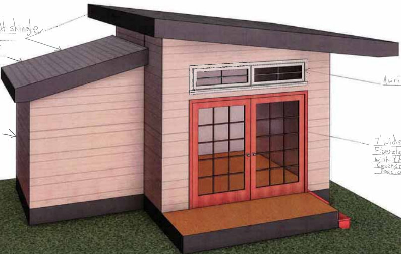
Demolition Review - 979 Jonathon Drive
Legistar 89780 - Demolition Historic Value Review

Demolition Review - 215 South Baldwin Street
Legistar 89953 - Demolition Historic Value Review
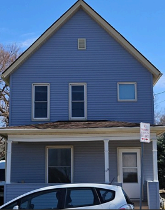
Demolition Review - 1312 East Wilson Street
Legistar 89963 - Demolition Historic Value Review
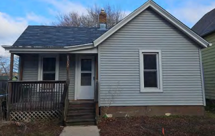
Demolition Review - 120 North Orchard Street
Legistar 90136 - Demolition Historic Value Review
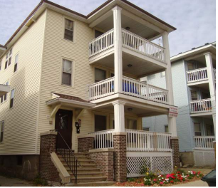
Demolition Review - 122-124 North Orchard Street
Legistar 90141 - Demolition Historic Value Review

Demolition Review - 126-128 North Orchard Street
Legistar 90146 - Demolition Historic Value Review
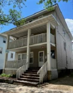
Demolition Review - 1313 Randall Court
Legistar 90151 - Demolition Historic Value Review
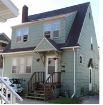
Demolition Review - 1314 Randall Court
Legistar 90156 - Demolition Historic Value Review
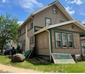
Demolition Review - 1402 Wyoming Way
Legistar 89844 - Demolition Historic Value Review
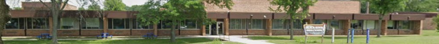
Demolition Review - 1601 North Sherman Avenue
Legistar 89839 - Demolition Historic Value Review
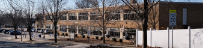
Landmark Plaque - 633 East Johnson Street
Legistar 90162 - Landmark Plaque
The home of Amy and Benjamin Butts has been designated Madison’s latest landmark. This designation recognizes the Butts’ leadership in establishing early African American neighborhoods in Madison. The wording on the plaque was reviewed, and edits were suggested. Alder Duncan made a motion to approve the wording with the recommended edits. Richard Arnesen seconded the motion, and it passed unanimously.
Demolition Review - 221 South Baldwin Street
Legistar 89958 - Demolition Historic Value Review
This item opened with a public comment. John Rolling was registered in neither support nor opposition to the demolition but wished to speak. Mr. Rolling suggested that the Landmarks Commission recommend the Plan Commission place a condition on the approval of the demolition requiring that the building be documented through measurements and photographs. He also stated the building is significant because of its designer (Ferdinand Kronenberg) and that it is included on the Williamson Street Walking Tour.
Preservation Planner Heather Bailey acknowledged that the building is part of the Williamson Street Walking Tour and has some associations with Madison’s history but also stated the building has limited historical integrity. Ms. Bailey referenced photos of the current condition of the building and noted that previous sandblasting treatment caused the sandstone to disintegrate. Additionally, any ornamentation is long gone, and much of the masonry is covered with vinyl siding to conceal the disintegrating sandstone. A motion was made by Jacob Morrison and seconded by Alder Duncan to recommend a finding of no known historic value. The motion passed unanimously.
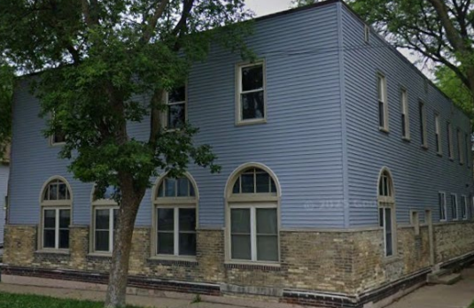
Demolition Review - 801 South Whitney Way
Legistar 90161 - Demolition Historic Value Review
This item opened with public comments. John Rolling was registered neither in support nor opposition but wished to speak. Mr. Rolling stated this well was one of 11 wells built during the 1920s-1950s that followed the designs from the 1917 central pumping station. Mr. Rolling suggested that the Landmarks Commission recommend the Plan Commission place a condition on the approval of the demolition requiring that the building be documented through measurements and photographs.
A motion was made by Jacob Morrison and seconded by Richard Arnesen for a finding that this property speaks to the vernacular context of Madison and the evolution of the Prairie-style design for municipal water service structures. They recommended that the Plan Commission request documentation of existing conditions to meet historic survey standards. The motion passed unanimously.

Motion to adjourn was made by Richard Arnesen and seconded by Jacob Morrison. Unanimously approved.
September 15, 2025
By Diane Zenz
Last month’s minutes were approved. There were no public comments, disclosures, or recusals.
The following items were approved on the Consent Agenda with a finding of no known historical value: - Demolition permit for a 4-unit commercial building at 533 Conklin Place (District 2) - Legistar 89670 - Demolition permit for 2 commercial buildings at 305 N. Frances Street (District 2) - Legistar 89675 - Demolition permit for a single-family residence at 6314 Hartford Drive (District 7) - Legistar 89680
Molly Harris moved to approve, seconded by Jacob Morrison. The motion passed unanimously.
Demolition Review - 533 Conklin Place
Legistar 89670 - Demolition Historic Value Review for a commercial building at 533 Conklin Place (District 2).
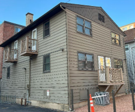
Demolition Review - 305 N. Frances Street
Legistar 89675 - Demolition Historic Value Review for 2 commercial buildings at 305 N. Frances Street (District 2).
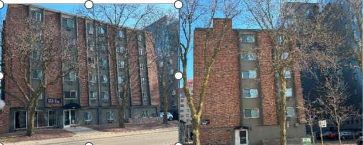
Demolition Review - 6314 Hartford Drive
Legistar 89680 - Demolition Historic Value Review for a single-family home at 6314 Hartford Drive (District 7).
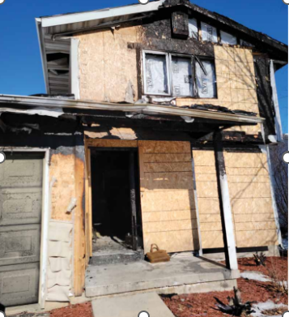
Garage Demolition - 748 Jenifer Street (Klose Cottage)
Legistar 89575 - Demolition on a Designated Madison Landmark Site at 748 Jenifer Street in the Third Lake Ridge Historic District, Klose Cottage (District 6).
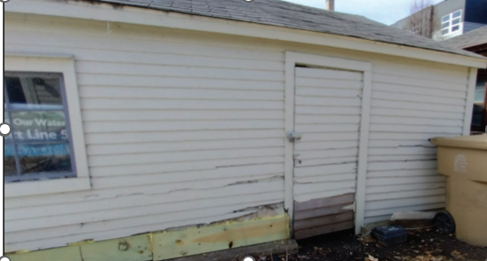
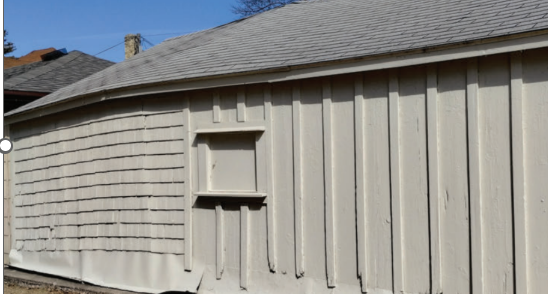
The property contains two buildings: the historic Klose Cottage and a small garage. The garage is not original to the property, is in poor condition, and is not structurally sound. The proposal is to demolish the existing garage and replace it with a new concrete parking slab.
During public comment, Zoe Kuntze (current occupant since 2019) spoke neither in support nor opposition. She expressed concerns about the property owner and management company’s history of negligence, particularly regarding lead paint removal during demolition. She also raised concerns about inadequate parking and potential future decisions by the owner. Heather Bailey noted that the city has issued a work order for the entire property.
Craig Balbach (representing the owner) and Russ Endres (owner) were registered in support and available for questions. Two letters from neighbors expressed concerns about the demolition’s negative impact on the neighborhood character, where small garages are common.
Commissioners Harris, Arnesen, Morrison, and Bailey discussed the request and concerns presented. They determined that many concerns fall outside the Landmarks Commission’s jurisdiction and belong to other departments such as Public Health and Zoning.
Jacob Morrison moved to approve the demolition request with conditions that final specifications be approved by staff and that the concrete pad be no larger than the garage footprint. Molly Harris seconded. The motion passed unanimously.
Signage - Madison Catholic Association Clubhouse
Legistar 89900 - Certificate of Approval for exterior alteration (signage) to a Designated Madison Landmark, Madison Catholic Association Clubhouse (District 4).
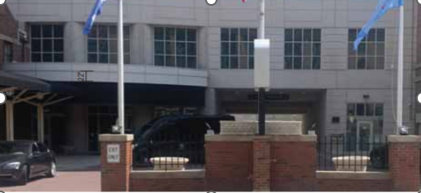
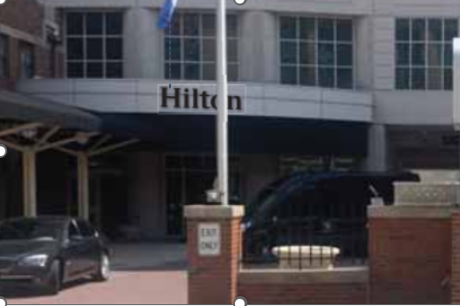
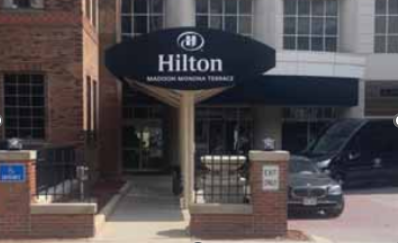
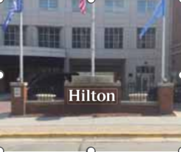
The project involves removing existing Hilton signage and replacing it with new ground and canopy signs. None of the existing or proposed signage is located on the historic Madison Catholic Association Clubhouse building. The signage is positioned adjacent to the historic building and on the architectural canopy of the non-historic Hilton hotel located behind the clubhouse.
Molly Harris moved to approve the Certificate of Approval, seconded by Katherine Kaliszewski. The motion passed unanimously without discussion.
Informational Presentation - 425 N. Frances Street and 450 W. Gilman Street
Legistar 90011 - Development Adjacent to a Designated Madison Landmark (Grimm Book Bindery).
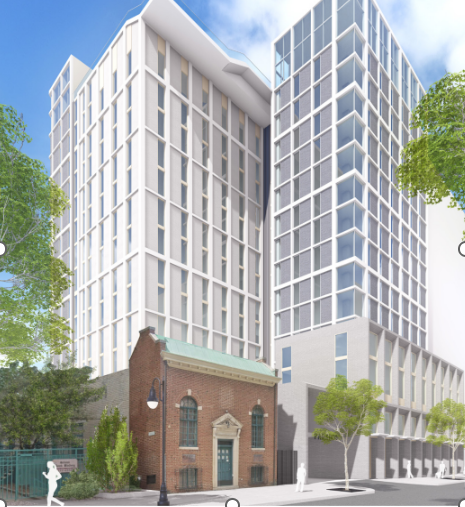
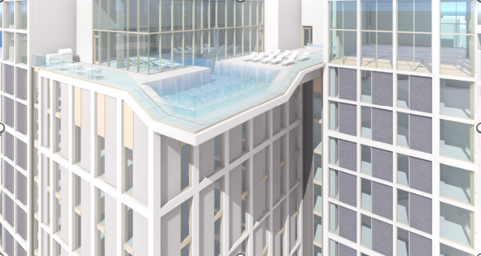
Brian Munson and Robert Tait presented early-stage plans for student housing in a 16-story building. The design aims to step down the massing by pushing the building’s bulk toward the rear, preventing the historic building from being overwhelmed.
Katherine Kaliszewski and Molly Harris expressed concerns that the ground floor alignment might overshadow the historic building. Robert Tait clarified that the footprints are even and other views show this more clearly. Jacob Morrison inquired about materials and colors to minimize massing impact. The team plans to use lighter gray at ground level transitioning to darker colors toward the back.
Alder Duncan questioned the necessity of a rooftop pool and suggested more sustainable alternatives. Robert Tait acknowledged this could be discussed but noted that pools are important amenities for student housing. Brian Munson explained that most newer downtown student projects include rooftop pools as essential amenities.
The project team plans to meet with the Urban Design Commission and hold a neighborhood meeting the following week, with application submission targeted for late October.
Historic Markers - Text Approval
Legistar 89946 - Historic Markers Text Language Approval
Heather Bailey explained that the city approved a new historic marker program in 2024. Staff developed language for the first phase of markers and are consulting with tribal partners for Indigenous heritage markers to be presented at a future meeting. Markers will feature brief, accurate text with QR codes linking to additional information that can be updated as needed.
OUTDOOR MARKET
Potential location: E. Washington and N. Pinckney Street
HILLS GROCERY
Potential location: Dayton Street at existing sign location
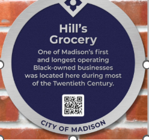
FIRST BLACK NEIGHBORHOOD
Potential location: Dayton Street at existing sign location
GEOLOGY - Glacial Lakes
Potential locations: Olin Park, Picnic Park, Warner Park
Molly Harris recommended changing the MARKET plaque to capitalize “Square” or read as “Capitol Square” and add “Street Markets” or “Farmers Market.”
Katherine Kaliszewski moved to approve with discussed edits, seconded by Jacob Morrison. The motion passed unanimously.
Jacob Morrison moved to adjourn, seconded by Molly Harris. The motion passed unanimously.
August 18, 2025
By Diane Zenz
The meeting began with the election of officers. Katherine Kaliszewski and Richard Arnesen were re-elected to continue serving as Chair and Vice Chair, respectively. There were no public comments, disclosures, or recusals.
The following items were approved on the Consent Agenda with a finding of no known historical value:
- Certificate of Approval for exterior alteration (signage) at 823 Williamson Street in the Third Lake Ridge Historic District (District 6) - Legistar 89512
- Demolition permit for a two-unit residential building at 3235-3237 Burke Avenue (District 12) - Legistar 89371
- Demolition permit for a commercial building at 3236 Commercial Avenue (District 12) - Legistar 89372
- Demolition permit for a commercial building at 3300 Commercial Avenue (District 2) - Legistar 89374
- Demolition permit for a commercial building at 308 E. Washington Avenue (District 2) - Legistar 89435
Ald. Duncan moved to approve, seconded by Molly Harris. The motion passed unanimously.
Signage Installation - 823 Williamson Street
Legistar 89512 - Certificate of Approval for exterior alteration at 823 Williamson Street in the Third Lake Ridge Historic District (District 6).
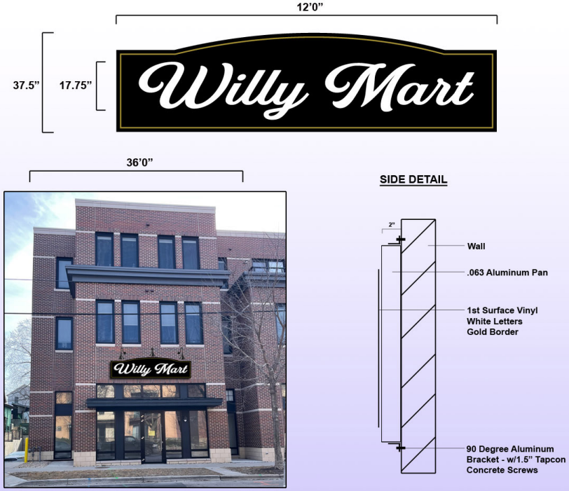
Demolition Review - 3235-3237 Burke Avenue
Legistar 89371 - Demolition Historic Value Review for a two-unit residential building at 3235-3237 Burke Avenue (District 12).
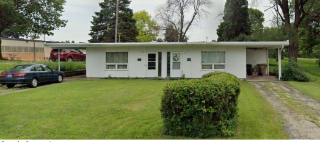
Demolition Review - 3236 Commercial Avenue
Legistar 89372 - Demolition Historic Value Review for a commercial building at 3236 Commercial Avenue (District 12).
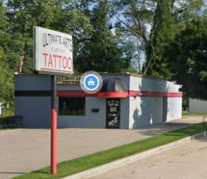
Demolition Review - 3300 Commercial Avenue
Legistar 89374 - Demolition Historic Value Review for a commercial building at 3300 Commercial Avenue (District 2).
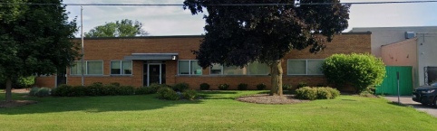
Demolition Review - 308 E. Washington Avenue
Legistar 89435 - Demolition Historic Value Review for a commercial building at 308 E. Washington Avenue (District 2).
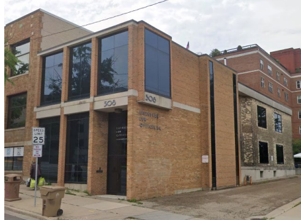
New Construction - 124 E. Gorham Street
Legistar 87103 - Certificate of Approval for land combination and new construction at 124 E. Gorham Street in the Mansion Hill Historic District (District 2).
This project appeared before the Landmarks Commission for the third time, following previous presentations in March and May 2025. The proposal involves combining lots at 116 and 124 E. Gorham Street, constructing a new multi-unit building at 124 E. Gorham, and relocating and renovating an existing historic carriage house.
Staff found that the latest design harmonizes with historic structures in the area and that the building’s massing has been appropriately reduced through setbacks and other design features. Staff recommended approval with conditions requiring: - Final specifications for proposed windows, doors, railings, siding, fascia, roof venting, lighting, and mechanicals - A plan for the temporary removal and reinstallation of the historic carriage house
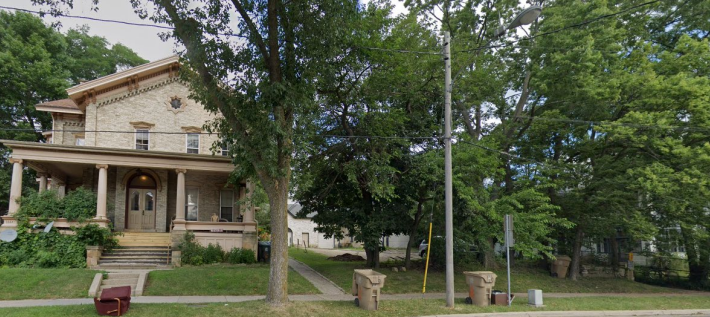
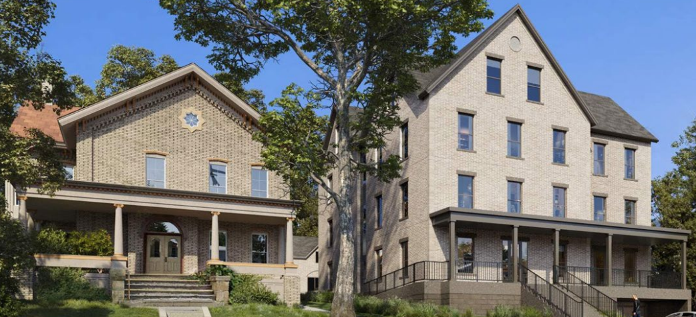
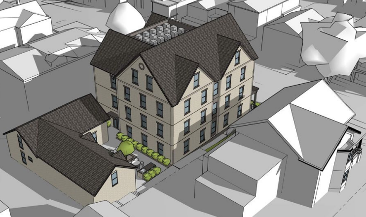
Commissioner Morrison moved to approve with the listed conditions, seconded by Commissioner Harris. The motion passed unanimously.
Demolition Review - 302 E. Washington Avenue
Legistar 89434 - Demolition Historic Value Review for a commercial building at 302 E. Washington Avenue (District 2).
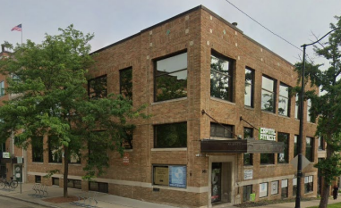
John Rolling spoke in opposition to the demolition, noting that the building housed the Capitol Times from 1928 to 1949. He expressed concern about losing history and requested that if demolition is approved, photos and measured drawings be taken and preserved for posterity. Duane Johnson was registered in support and available for questions.
Preservation Planner Heather Bailey acknowledged the building’s connection to The Capitol Times and noted that information is available in the preservation file. She explained that the building has undergone several renovations over the years.
Commissioner Morrison noted that while the building’s architect, Philip Homer, designed many notable buildings in Madison, this is not among his more significant works. He noted the building was not landmarked and supported recording the site for posterity. Commissioner Harris expressed appreciation for Mr. Rolling’s comments and leaned toward recording the site. Commissioner Arnesen observed that the interior has been extensively modified with no historic features remaining.
Staff recommended a finding of “B” - the building has historic value to the vernacular context as it housed the Capitol Times from 1928 to 1949.
Alder Duncan moved for a finding of “B” - that the building itself is not historically, architecturally, or culturally significant. Commissioner Morrison seconded. The motion passed unanimously.
August 4, 2025
By Diane Zenz
It was a short agenda this evening with the meeting taking less than 25 minutes.
- Request for Certificate of Approval of an addition to this Third Lake Ridge Historic District property located at 739 Jenifer St in District 6 Legistar 88975 was moved to the Consent Agenda. Motion to approve was made by Alderman Duncan and seconded by Jacob Morrison and passed unanimously.


Sauthoff House - 740 Jenifer St
Legistar 88974 - Request for Certificate of Approval of Demolition and Addition to a Designated Madison Landmark
The home is in the Third Lake Ridge Historic District (District 6). The building, known as the Sauthoff House, was built in 1857 and was designated a Madison landmark in 1977. Frederick (a tailor) and Johanna Sauthoff moved from Hanover, Germany and were the first owners of the home. The Sauthoff House was designated a landmark for its association with 19th century merchant families in the early history of the city and for its vernacular architecture. In the 1950s a rear addition was added to the home. This addition, like other additions to historic homes in that period, has no significance in its own right.

The original building is characterized by its blocky style. The proposed addition on the back of the structure (which faces the lake) is a contemporary interpretation of this same blocky style. There will also be large open areas with many of the areas featuring large glass windows.


Joy Newmann, the next-door neighbor, spoke very highly of the owner’s care for the home and the proposed project. Leslie Marshall (homeowner), Michael Abraham and Abigal Rohlinger (Michael Abraham Architecture), and Mikael Eder (Bachman Construction) were available to answer questions. There were no questions.
Staff believes the standards for granting a Certificate of Approval could be met with several conditions. Jacob Morrison, Katherine Kaliszewski and Molly Harris made positive comments regarding the project and how well the contemporary addition blends with the original historic building.
Motion made by Molly Harris and seconded by Jacob Morrison to approve the project with recommended conditions. Motion passed unanimously.
July 21, 2025
By Diane Zenz
The meeting was called to order at 5:01 p.m. and lasted 21 minutes and 53 seconds. The June 7th minutes were approved.
Madison Trust for Historic Preservation Grant Program
Legistar 62943 - Presentation on Grant Opportunities
Jennifer Gurske, President of the Madison Trust for Historic Preservation, presented information about the organization’s new grant program. The program was made possible through a generous donation from Erica Gehrig.
The Madison Trust will award a total of $10,000 annually in grants, with individual awards ranging from $5,000 to $10,000. The 2025 application period runs from August 1st through October 1st, with selections announced by November 1st. All eligible buildings must be located within Madison city limits.
Grant funding is available in two categories: - Bricks and Mortar Projects: Including construction, historic window rehabilitation and restoration, repairs to wood siding, masonry, and porches. These projects typically involve significant expenses, and while grants provide assistance, they do not cover the full project cost. - Madison Landmark Nominations: Supporting the designation of historic landmarks within the city.
Additional resources are available: - Madison Trust for Historic Preservation information - Tax Credits for Historic Building Rehabilitation - Historic Rehabilitation Loans
Demolition Historic Value Review - East Washington Avenue Redevelopment
Seven buildings were presented for demolition approval as part of a larger redevelopment project. Staff recommended approval for all seven properties, finding they meet the standard of “No Historical Value.” The following properties, all located in District 12, were reviewed:
Legistar 89126 - 930 N. Fair Oaks Avenue
Legistar 89127 - 3357 E. Washington Avenue
Legistar 89128 - 3359 E. Washington Avenue
Legistar 89133 - 3361 E. Washington Avenue
Legistar 89137 - 3365 E. Washington Avenue
Legistar 89140 - 3371 E. Washington Avenue
Legistar 89143 - 3375 E. Washington Avenue
Commissioner Harris moved to approve Items 3-9 for demolition based on the finding of no historic value. Alder Duncan seconded the motion. The motion passed unanimously without discussion. The meeting then adjourned.
June 16, 2025
By Diane Zenz
The Landmarks Commission meeting was called to order at 5:01 p.m. and lasted 13 minutes. The minutes of June 2nd were approved. There were no disclosures or recusals.
The following items were approved on the Consent Agenda: - Request for Certificate of Appropriateness for demolition, new construction, and exterior alteration at 413 S. Brearly Street in the Third Lake Ridge Historic District (District 6) - Legistar 88408 - Request for Certificate of Appropriateness for new construction at 1717 Kendall Avenue in the University Heights Historic District (District 5) - Legistar 88409 - Request for Certificate of Appropriateness for an addition at 2113 Kendall Avenue in the University Heights Historic District (District 5) - Legistar 88410
Demolition and New Construction - 413 S. Brearly Street
Legistar 88408 - Certificate of Appropriateness for demolition, new construction, and exterior alteration at 413 S. Brearly Street in the Third Lake Ridge Historic District (District 6).
The project involves demolishing an existing garage and replacing it with a similar structure. Additionally, repairs will be made to damaged columns and railings on the front porch of the house. The current wood railings are not historic, and the existing garage is a simple, utilitarian structure without historical or architectural significance.
Staff determined that all standards have been met and recommended approval. Application details with location diagrams and staff report are available online.
New Construction - 1717 Kendall Avenue
Legistar 88409 - Certificate of Appropriateness for new construction at 1717 Kendall Avenue in the University Heights Historic District (District 5).
The project proposes constructing a new garage on this corner property. The historic home is a Queen Anne-style structure with clapboard siding. The new garage design maintains compatibility with the historic district’s character while clearly reading as contemporary and secondary to the historic home.
Staff determined that all standards have been met and recommended approval. Application with photos and staff report are available online.
Addition - 2113 Kendall Avenue
Legistar 88410 - Certificate of Appropriateness for an addition at 2113 Kendall Avenue in the University Heights Historic District (District 5).
The project includes constructing a rear addition to replace a non-historic addition on this 1922 vernacular house, plus adding a new second-story window. The rear addition will feature a slight wall inset to distinguish it from the historic structure, while matching the siding, trim, and window configuration of the original house. However, the proposed second-story window would be highly visible from the public right-of-way and does not meet standards.
Staff recommended approval with the condition that the applicant submit updated drawings removing the proposed second-story window. Application with diagrams and staff report are available online.
Commissioner Arnesen moved to accept all consent agenda items, seconded by Commissioner Morrison. The motion passed unanimously.
Historic Preservation Ordinance Amendment
Legistar 88383 - Amendment to Madison General Ordinances Chapter 41 and associated references in Chapters 1, 28, and 31.
This item continued discussions from the April 21, 2025 Special In-Person Meeting regarding updates to historic landmark buildings ordinances. The proposed changes modernize language for clarity and ease of use, including: - Changing “Certificate of Appropriateness” to “Certificate of Approval” - Removing the term “Master” in favor of standardized professional terminology - Revising Computation of Time for Public Notice to 14 days for consistency throughout city ordinances
Commissioner Taylor inquired about public feedback and the dissemination process for these changes. Preservation Planner Heather Bailey reported no public feedback received and confirmed that approved changes will be published in relevant documents and available online following Common Council approval.
The staff report detailing proposed changes is available for review.
Commissioner Arnesen moved to recommend approval to Common Council, seconded by Commissioner Morrison. The motion passed unanimously. The meeting then adjourned.
June 2, 2025
By Diane Zenz
The meeting of the Landmarks Commission was called to order at 5:00 p.m. and lasted 1 hour and 6 minutes. The minutes of the May 19th meeting were approved.
Public Comments - This item gives members of the public an opportunity to comment on items that are not on the agenda. There were no comments.
Disclosures and Recusals - There were none.
- Request for Certificate of Appropriateness for new construction on a designated Madison Landmark site located at 1775 Norman Way in District 19 Legistar 88189 was moved to the Consent Agenda. Motion made by Jacob Morrison and seconded by Molly Harris to approve the project.
Development Adjacent to Mattermore-Malaney House - 501 E. Washington Ave
Legistar 88188 - Advisory Recommendation for Development Adjacent to a Designated Madison Landmark
The Landmarks Commission is an advisory body to the Urban Design and Planning Commissions in this matter as the project is adjacent to the Mattermore-Malaney House landmark at 512 E. Main St (District 6).
Kurt Stege commented positively about the move of the inlet from E. Washington St. to East Main St., believing it made a big difference in the proposal. He informed the Commission of the relationships between the landmark homes in the area and their significance to each other, and wondered what trees would come down and which could stay.
Marc Ott, Nick Orthmann and several other members of the design team were available to speak in support of the project and answer questions.
Heather Bailey, Preservation Planner, provided a summary of the project. The project will redevelop the property at 501 E. Washington to build a 7-story apartment building. This property shares a rear property line with the Mattermore-Malaney House at 512 E. Main St. The Mattermore-Malaney House was designated a Madison landmark in 2002 for its architectural significance as a rare and exceptionally intact example of a frame, Front Gable house. The house, constructed in 1874, is a simple clapboard structure located within the First Settlement local historic district. This area of the neighborhood has a mix of similarly scaled residential structures and larger infill apartment buildings. The landmark home has a deep residential lot (133 feet) with a substantial tree canopy. This tree canopy, along with the inset in the proposed rear wall-plane of the adjacent new structure, creates a visual buffer.
Jacob Morrison and Molly Harris asked the design team if they had considered utilizing setbacks on some of the upper floors of the apartment building to lighten the impact of the height. Marc Ott explained there are some setbacks in certain areas across the upper facade.
Staff recommends to the Landmarks Commission to advise the Plan and Urban Design Commissions that the proposed work will not be so large or visually intrusive as to adversely affect the historic character and integrity of the adjoining landmark.
Jacob made a motion to advise the Urban Design and Planning Commissions that the proposed work will not be so large or visually intrusive that it would adversely affect the historic character and integrity of the adjoining landmark. Motion passed unanimously.
Spring Harbor Mound Group - 1775 Norman Way
Legistar 88189 - Certificate of Appropriateness for New Construction on a Designated Madison Landmark Site
The applicant is requesting that the Landmarks Commission approve a Certificate of Appropriateness to make alterations to a designated landmark site in District 19. The proposed project is to build a detached garage on the residential property that is part of a collection of properties within the boundary of the Spring Harbor Mound Group Landmark site. Staff have worked with the property owner to make sure the new garage is located well away from the burial mounds in the area. The Office of the State Archaeologist has approved a Request to Disturb for this project, in compliance with Wisconsin Burial Law. Staff agree with the State that this project is unlikely to disturb the burial mounds and will not have a negative impact on the historic integrity of the site. Staff believe that the standards for granting a Certificate of Appropriateness are met and recommend the project be approved.
North-South Bus Rapid Transit - Section 106 Review
Legistar 88465 - Section 106 Review for Bus Rapid Transit Project
The City of Madison is proposing a north-south bus rapid transit (BRT) route affecting Districts 2, 4, 6, 8, 12, 13, 14, 15, and 18. The project is pursuing funding through the Federal Transit Administration (FTA) and therefore it must comply with Section 106 of the National Historic Preservation Act and its implementing regulations 36 CFR Part 800. Section 106 requires the consideration of effects to historic properties, which are defined as any district, site, building, structure, or object listed in, or determined eligible for listing in, the National Register of Historic Places. As a result, the bus stations are considered structures that require review by the advisory body.
Heather Bailey gave a brief explanation of the North-South Bus Rapid Transit, explaining that this route and the bus stations are much less concerning from a historical perspective than the East-West route was because the North-South route doesn’t run near Historic Districts.
Mike Cechvala, of the Planning Division, explained the project in more detail. The Rapid Route B is Transit’s 2nd Bus Transit Rapid Route. It will provide 9.1 miles of new BRT runningway and includes 23 new stations. It is the stations that are of concern to Landmarks.
Katherine Kaliszewski commented that she is one of the Cultural Resource Managers for the Department of Transportation. Although most of her work involves highways, she knows the reviewer for this project and knows she will want to see pictures of the stations with emphasis on detail. She added it is important to be very specific and clear that the stations will be similar but will not all look the same. She noted that the station on Park St. is not labeled as a full reconstruct but it appears it is almost a full reconstruct so it needs to be labeled as such. They also must be clear with the reviewer that potentially minor changes will need to be made along the way.
Staff determines there are no adverse effects on historical properties by the project.
Alder Duncan commented that he would like the project to come back to LMC as a review.
Motion by Molly Harris that Landmarks has no comments at this time and would agree with the determination of no adverse effects on historical properties but would like to remain a consulting party and be notified of any changes that have the potential of impacting historical resources. Motion passed unanimously.
Kennedy Road Charging Station - Section 106 Review
Legistar 88466 - Section 106 Review for On-Route Charging Station
Mike Cechvala, of the Planning Division, provided a presentation on the planned on-route charging stations in District 18. These stations will be located at the end of both routes. Currently the bus has to go back to the garage to charge, which is costly and time-consuming.
Installation of the on-route chargers on Northport Drive and Kennedy Rd. is a separate project. The project is in the design stage with construction expected in 2025 and 2026 and planned completion in 2026. The charging connection is overhead and includes a support building.
Staff determines there are no adverse effects on historical properties by the project.
Motion by Molly Harris and seconded by Edna Ely-Ledesma that Landmarks has no comments at this time and would agree with the determination of no adverse effects on historical properties. Motion passed unanimously.
Demolition Historic Value Review - 630 E. Washington Ave
Legistar 88190 - Consideration of a Demolition Permit to Demolish a Commercial Building
This building in District 6 was constructed in 1959 as St. Patrick’s Roman Catholic School and is described as a simple instructional-type building with little architectural interest. The Landmarks Commission completed a historic value review of this same structure on August 26, 2019, and found it to have no known historic value. The Salvation Army of Dane County is proposing a redevelopment of their current property at 630 E. Washington Avenue. Currently the Salvation Army operates a women and family homeless shelter and services at the site in the former catholic school building. The proposed redevelopment would raze the current building and adjacent parking lots to the east and construct a new purpose-built shelter building. The new shelter will contain expanded capacity for single women and families stays. Additionally, it will provide respite recovery rooms, supportive services including case management, food service, classroom training rooms, multi-purpose space, and recreational space. Also, there will be space for medical primary health, mental health, and dental services to be provided.
Staff recommendation is of no known historic value.
The motion made for a finding of no historical value was made by Jacob Morrison, seconded by Edna Ely-Ledesma. Motion passed unanimously.
May 5, 2025
By Diane Zenz
The Annual Special Meeting of the Landmarks Commission was held in person and lasted 1 hour and 6 minutes.
Members present: John Duncan (Common Council Member), Jacob Morrison (Registered Architect), Molly Harris (Historian), Maurice Taylor (Licensed Realtor), Edna Ely-Ledesma (Adult City Resident), Richard Arnesen (Adult City Resident), and Katherine Kaliszewski (Adult City Resident). Heather Bailey, Preservation Planner, served as the staff representative.
Commission Orientation and SOI Standards Review
Legistar 83865 - Commission Orientation and Parliamentary Procedures
The meeting began with a brief history and purpose of the Landmarks Commission, followed by an orientation on parliamentary procedures. The commission then reviewed the Secretary of Interior (SOI) Standards.
During the discussion, a commissioner inquired about potential impacts from the Trump administration’s policies on the Commission’s work. Heather Bailey indicated that several Executive Orders have streamlined federal compliance processes, potentially removing stakeholder involvement from groups like the Commission and State Historical Preservation offices. She noted that if federal standards are eliminated, they may still be applicable if local ordinance language is modified.
Bailey also informed the Commission that staff received notification to halt work on a previously awarded Certifiable Local Government grant. The grant was intended to develop a historic context for public, civic, and commercial architecture from the 1960s, 1970s, and 1980s. Since federal funds had not yet been encumbered, the project cannot proceed.
Five-Year Review of Historic Preservation Plan
Legistar 83866 - Five-Year Check-in on Madison Historic Preservation Plan
The Commission reviewed progress on the Madison Historic Preservation Plan, adopted in 2020. The plan is updated every 10 years to ensure the preservation program remains focused and represents Madison’s diverse history.
Priority strategies discussed include, but are not limited to: - Placing plaques at existing buildings and places - Developing tourism marketing and branding materials highlighting historic attractions - Coordinating an urban design program to promote city-owned historic buildings and places - Identifying underrepresented building types in the historic resources inventory - Developing a “top 10” list of historic buildings and places to preserve - Encouraging adaptive reuse for affordable housing options
The full plan is available online. All projects remain ongoing.
Historic Preservation Ordinance Text Amendment
Legistar 88167 - Proposed Historic Preservation Ordinance Text Amendment
Heather Bailey guided commissioners through proposed updates to the Historic Preservation Ordinance. Key changes include clarifying ambiguous language and updating terminology to coordinate with current building permit terminology. A red-lined copy was provided to commissioners and is available online for public review.
This matter will proceed to the Common Council for approval. Discussion was minimal.
March 10, 2025
By Diane Zenz
The commission members met virtually at 5pm with all present except Katie Kal, who arrived at 5:20 pm. Richard Arnesen chaired the meeting until Kal’s arrival. Only one item was moved to the consent agenda, which passed unanimously:
- Request for Certificate of Appropriateness regarding exterior alteration of signage in the Third Lake Ridge Historic District for a property located at 315 S. Blount St in District 6 Legistar 87365.
Benjamin and Amy Butts House
The first item of the night was approving a landmark nomination for the Benjamin and Amy Butts house, located at 633 East Johnson Street in District 6 Legistar 87159. Staff recommends this property for nomination indicating it meets Criteria A & B.
Regarding criteria A, the House is associated with the broad patterns of cultural, political, economic, or social history of the nation, state or community. The nomination makes a well-documented case for this property’s association with the early era of Madison’s African-American community. Madison’s Underrepresented Communities Historic Resources Survey identifies this period as spanning from Madison’s first recorded African- American resident in 1839 until the early 20th Century. The activism and community - building undertaken by the Butts family while they lived at this home had a significant effect on their community as Madison grew.
With regard to criteria B, Staff indicate it is associated with the lives of important person, and/or with important events in national, state, or local history. The nomination primarily document’s the story of Benjamin Butts, but also includes details of the community activism of Amy Butts. Both were leaders in Madison, serving as founders for key African-American cultural institutions, such as the St. Paul’s AME Church and the Capital City Lodge #2 of the Prince Hall Masons. While Amy and Benjamin lived at this home, they took in African-American borders as people moved to Madison to live and work. They also partnered with other leaders to establish Madison’s first African-American neighborhood located at the 600 block of E. Dayton St.
While reviewing the substance of the nomination in order to advise the Common Council, the Commission heard from several members of the public. Bob Klebba spoke in support of the nomination. Klebba was also the person who initiated the nomination process. He notes the building came to his attention when a preservation planner suggested this building was worthy of a Landmark Nomination. The building is not attractive, doesn’t have notable architectural features and the inside has been remodeled. It also leans noticeably to the west. What makes this site important is who lived there. Klebba goes on to say how landmarking this building was made easier than some sites because the history of the people who lived there was already documented. This made it cheaper for the Madison Trust to contract out the work as a lot of the background information was already documented. Klebba continued, stating how as a voluntary organization it is difficult and too expensive for the Madison Trust to do more than one nomination a year. Klebba “would ask the Commission to keep this in mind when the Madison Trust and other historical preservationists are perceived as acting at the last minute when demolition applications come to the Landmark Commission and on to the Plan Commission.” Klebba also states a typical nomination cost the Madison Trust between $3,500 and $7,500 to complete.
Joe Lusson and Commissioner Taylor spoke in support as well and stated the owners of the building also support the nomination. Commissioner Taylor added this house is likely to come before the Landmarks Commission again, as it may need some rehab in the future—urging some leeway on these potential rehab needs.
While Elizabeth Miller was present for questions, there were none and the public hearing was closed.
Motion recommend to Councial approval of the landmark nomination made by Maurice Taylor, which was seconded by Jacob Morrison before being passed unanimously.
St. Bernard’s Catholic Church
The next item up for discussion was the request for a Certificate of Appropriateness for an addition to St. Bernard’s Catholic Church, a designated Madison landmark located at 2450 Atwood Avenue in District 15. Specifically,the request is to build onto the existing structure in order to construct a crypt.
The location of this addition would be in the courtyard between the church structure and the rectory. The crypt is proposed as a single-story gabled structure with windows, attached to the church but separated from the historic structure by a smaller addition. The addition will stay with the architectural character of the historic building. The project also includes replacing an ornamental concrete block privacy wall with a decorative metal fence. Detailed specifications for the fencing and windows for the crypt have not been provided at this time.
Bradley Servin was available for questions and stated the roof for the crypt will have the same copper roofing of the original church and the same stone veneer.
Staff believe the standards are met for granting the Certificate of Appropriateness and recommended the Landmarks Commission approve the project with conditions which relate to the specification for the new fencing and window details for the crypt to be approved by staff when available. The item passed unanimously, with conditions on the fencing and windows as stated.
Mansion Hill Historic District
The commission shifted their focus to the combination of land and new construction at 124 East Gorham Street in the Mansion Hill Historic District, which resides in District 2 Legistar 87103.
Joel Koeppen, design leader of Kahler Slater INC, submitted materials and presented the plans. This included:
Existing Structures: The existing Carriage House is a historic resource and is intended to remain on site. The structure is to remain generally intact but reprogramed on the interior.
Proposed Lot Combination: The plan is to combine 124 E. Gorham St. with 116 E. Gorham, of which there is historical precedent. H. Bailey, City Preservation Planner, provided documentation to support this action.
Proposed Development: The proposed development consists of a 5 story, 22-unit Multifamily Residential building with subgrade parking. The existing Carriage House is to be renovated and reprogrammed as a community space and additional units.
The project type is new construction of residential apartments in the Mansion Hill District. Staff have been working with the property owner on possible options for infill new construction on the property at 124 E. Gorham. This property is currently a gravel parking lot with an 1860’s carriage house on the rear of the site. While the lot was once part of the adjacent landmarked Brown House property (112 E. Gorham) by the mid - 20th century, it operated as a separate parcel. The project is exploring two options: (1) keeping the lot separate or (2) combining the lot with the adjacent Brown House lot.
Keeping the lot separate with a new residential structure at the front, which would have to comply with Historic District Standards and have review for Development Adjacent to a Landmark. Alternatively, combining with the Brown House lot would require a Certificate of Appropriateness for land combination and the new construction at the front of 124 East Gorham would need to comply with the Secretary of the Interior’s Standard for Rehabilitation.
The informational presentation explored the feasibility of the second option. Staff have concerns about the massing, contextual setback, and architectural character of the proposed new construction. Connecting the new structure to the carriage house will also raise problems with Zoning standards. The historic carriage house needs space so that it is not obscured. If the property is a part of the landmark site, then the new construction will need to look like it belongs to that site, but with significant separation from the historic resources so that the new construction does not overwhelm them. Commissioner Morrison commented the lot sizes need to be considered and look at comparable structures in the area. The carriage house connector can be tricky and recommend making the connector look like it could be removed. The lowering of the roof line to 4 stories helps a lot. Proportion of window space to wall space seems off and makes the windows look small. Similarly, Commissioner Kal stated the porches look too modern and suggests making the front of the building more pronounced and less like a driveway.
Bob Klebba spoke in opposition. Klebba also owns the Governor’s Mansion Inn, a boutique hotel located at 130 East Gillman St. Klebba explained the current Brown House and carriage house resembles the original look of the area with the buildings on the large lots, using historical maps to give the Commision a visual representation. Klebba further complained how neighboring lots have been filled in with 1950’s apartment buildings as well as the 1970’s Verex Plaza building, which provide no context to the National Landmark buildings.
Bruce Bosben of Apex Properties spoke in support his company, as Apex Properties owns the Brown House in addition to the Carriage House and 124 Giillman to the north. Bosben overall owns five buildings listed on the National Registry—which he claims is more historic buildings in Madison than anyone else. He has owned the Carriage House for at least 20 years and would like to build on this lot.
Commissioner Arnesen stated their belief that the proposed building is too large for the site and crowds out the carriage house. They further voiced concern about brick size for the project, which proposes using a modular size brick rather than a utility size brick. Alternatively, Commissioner Taylor stated he likes the way the building looks and argued the owner is making an effort.
Alder Latimer Burris mentioned wanting to take a look at the property, stating the proposal is a lot to digest expressing the desire for more time to get additional feedback. She asked whether the Madison Trust has weighed in at all, to which Heather Bailey responded the Madison Trust has not weighed in, but the Commission will hear from them when an actual application is completed.
Commissioner Harris spoke on how the Carriage House is not designated a Historical site, only the Brown house—drawing attention to how the primary consideration at hand is the new construction.
Koeppen thanked the Commission for their input and comments before stating they will continue to work towards a design that will meet the needs of the city while maintaining the integrity of the historical significance of the area.
2604 Waunona Way
Proposed demolition of buildings located at 2604 Waunona Way in Distract 14 was also on the evening’s agenda Legistar 86033. Having been built between 1901 and 1902, Staff recommended a finding of historical value related to vernacular architecture; however, the building itself is not historically significant. This property is also located within the boundary of the Waunona Mounds site and any ground-disturbing activity would need to secure a Request to Disturb from the Wisconsin State Archaeologist and notify the Ho-Chunk National Tribal Historic Preservation Office.
The commission determined there is no historical value to the home, but acknowledged the Waunona Mounds site and the need to secure a Request to Disturb. A motion was made to approve and unanimously passed.
Short Items
With the meeting nearing a close, the Commission quickly reviewed historical value for 6105 South Highland Avenue and 2326 Vondron Drive.
Although 6105 South Highland Avenue is a single family home built in 1875, Staff recommended no historic value. Similarly, 2326 Vondron Road was not recommended to have historic value as it was built in 2000. Notably, 2326 Vondron suffered a fire, which has lead the Madison Fire Department to submit a request to demolish the commercial building.
The Commission agree with Staff, and a motion finding no historic value was unanimously passed.
Secretary’s Report Highlights
The Secretary’s Report then reminded the Commission the new demolition process went into effect March 9, 2025, but the Landmarks Commission will still see all demolition applications.
February 10, 2025
By Diane Zenz
On Monday night, the City of Madison’s Landmarks Commission met to discuss several proposals and items: a proposed amendment to the Lamp House Report, a development adjacent to an established historical building, and additions to historic districts. Among the consent agenda:
- Legistar 86590: Land Combination/Division at 1937 Arlington Place and 2013-2021 Chamberlain Ave in the University Heights Historic District located in District 5
- Legistar 86668: An addition to a Designated Madison Landmark, namely St. Bernard’s Catholic Church, located at 2450 Atwood Ave in District 15
Amending the 2013 Report of the Lamp House Block Ad Hoc Plan Committee Legistar 86824.
The Lamp House is a Frank Lloyd Wright building situated two blocks northeast of the Capitol. It was built in 1903 and is the oldest Wright building in Madison. It was added to the National Register of Historic Places in 1978. The mid-block location (unique among Wright’s works) is bound by East Washington, Mifflin, Webster, and Butler Streets. It is only accessible from Butler Street via a narrow, ascending driveway on a right of way between two homes. The keyhole lot then opens up, producing a compression/ release dynamic encountered frequently in Wright’s works. Although completely landlocked, the home originally provided viewscapes comparable to lakefront residential buildings. It has always been surrounded on all four sides by residential buildings and although the southern viewshed towards Lake Monona has been cut off by a high-rise on the adjacent lot and the westward view toward the Capitol was blocked by new construction in 2015, the penthouse enclosure (added on the roof) still has a view of Lake Mendota to the North and west. This three story building has exposed basement windows and a rooftop garden.
Ald. Bennett made a request to Council to amend the Report of the Lamp House Block Ad Hoc Plan Committee to remove or change some of the recommendations to restrict building heights around the Lamp House. Although Common Council later decided not to restrict building heights in existing plans, the recommendations in the Lamp House report have a status similar to city plans and so may restrict development. Landmark’s role is advisory only and the issues at hand consist of viewing to and from the Lamp House and Reference to Building Height.
The first proposed change to the initial report of 2013 focuses on which views should be prioritized for preservation (Page 3 of staff report). The report assesses View 1 (North Butler Street) should be preserved, whereas Views 2 and 3 (East Mifflin Street) should be preserved if feasible. The feasibility of preserving Views 2 and 3 should be determined by the Plan Commission during the review of a development proposal, subject to Common Council approval in the case of a planned development. View 4 has been partially accommodated in a redevelopment project undertaken after the adoption of this report.
The second proposed change (page 4 of staff report) focuses on the maximum building heights in the downtown plan as adopted in 2012 and subsequently incorporated into the zoning code. In summary, this would eliminate Lamp House viewscape restrictions in the area that effectively restrict buildings to 3 stories.
Alder Bennet (who made the requested change) spoke in support of preserving the Lamp House viewscapes, but stated if the requested changes are not made, 452 properties in her district can not be developed above three stories. Alder Bennet also stated she loves the Lamp House and the views are amazing, but we should be able to build houses and preserve history at the same time. She additionally indicated she has developers contacting her all the time.
Nan Fay - who spoke in opposition- believes there is no need to make changes to the current plan. Alternatively, Bruce Bosban (of Apex Property Management - developer and landlord in Madison) spoke in support of the changes. He stated he is one of the largest providers of natural affordable housing in Madison, owning 2,000 units in the city with the majority renting to low income families. Bosben informed the committee he has been buying old buildings to restore and renovate for over 40 years, owning five buildings on the National Register of Historic Places including the Lamp House. Last year, Bosben spent over $12 million restoring buildings that are over 100 years old and has also been involved in new development—having completed five developments in the last five years. Bosdan would like to build smaller efficiency units that will be priced as low income, as well as market priced buildings. The Lamp House complained that he “can’t get a plan past Staff in Planning” due to the low building height requirements and argued lower story buildings are not financially possible. There was a bit of a back and forth between Bosban and the chair of the Landmark Commission in regard to his statement that he doesn’t take TIF money or historic tax credits to build. The chair asked “is that because you don’t want to have to follow the standards?” In a sarcastic tone, the chair asked if he needed help getting that information. Finally, Alder Bennet asked if this questioning of Historic Tax Credits was relevant to the question at hand. The chair continued to explain her rationale for the questions until Staff Heather Bailey broke in to say that the line of questioning was out of order.
Commissioner Maurice Taylor asked Bosdan how many buildings he was planning to raze. Bosban replied with his goal of four buildings that face Mifflin Street and one that faces Butler Street, with about 50 units each. At this point the chair reminded the commission it was not their role to ask about future projects.
Kurt Stegge spoke in opposition, stating that the proposal is rewriting history. No one should add to a report done over a decade ago. Linda Lenards further voiced opposition, claiming the changes will impinge on views and if this change is made there will only be one view down a 12 foot wide alley. Alex Saloutos then urged the committee to not make the proposed changes, stating the Staff report does not address compliance of the proposed changes with the city’s historic preservation plan and their impact on this site. Saloutos further claimed the change fails to analyze the impact of the proposed changes of the Lamp House site.
Their statements were echeod by Robert Klebba, a well known preservationist with the Madison Historical Trust. Klebba urged Landmarks to not approve the amendment because the Lamp House is the only urban Frank Lloyd Wright site and mentioned there is already a plan for this block. Klebba boasted that it is an exceptional property. The argument to make this block conform to city wide zoning so that Planning’s job is easier flies in the face of having a special plan for this block and for this landmark. Klebba argued conformity is not more important than preservation. Alder Bennet then mentioned working with the Lamp House’s property owner to develop natural occurring affordable housing in order to build market rate housing at significantly higher rental cost, which will decrease affordable housing options.
After much discussion a motion was made to return the request to LEAD with the Recommendation to Place on File without Prejudice to the Plan Commission. The motion passed unanimously.
1 South Ingersol Street
The Plan Commission continued their meeting, moving their focus to development adjacent to a designated Madison landmark at the Gisholt Machine Co. Manufacturing Complex at 1301 East Washington Avenue Legistar 86671. The historic property in question: 1 South Ingersoll St. in District 6. Proposed work is fairly extensive, including:
- Construct new rear addition
- Replace non historic windows
- Masonry Repair
- Site work
- The site is connected to the Madison Metro Bus Barn
- There will be a facade change
- Rehab it back to its former historic look
- Add a bright colored mural
- Sawtooth area on roof (will not be seen)
A motion was made and the request was approved unanimously.
Mackenzie House
The committee reviewed the National Register of Historic Places nomination for the Mackenzie House, located at 2525 Marshall Parkway in District 13 Legistar 86953. Not only does the home have distinctive architecture, but there is also an archaeological site on the property.
The nomination was supported by the Landmarks Commission, who will submit comments as the certified local government to the State Preservation Review Board and National Park Service. A motion made and the passed unanimously.
University Heights Historic District
The commission also discussed an addition proposal in the University Heights Historic District, specifically 2006 Van Hise Avenue in District 5 Legistar 86669. After reviewing the Certificate of Appropriateness for the Mediterranean revival style home, which was constructed in 1924, the Commission went over the proposed work. This includes the construction of a new rear addition, replacement of non-historic windows, masonry repair, and miscellaneous site work. Ultimately, the Commission approved the proposal.